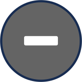
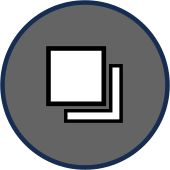

An ICH can be representative of the entire country, or more specific to a given region. Lebanon is divided into three administrative levels: Mohafazas, Kadas and Towns.Accessibility to the content of the ICHs of each level is scale-dependent. The number of ICHs of the current level appears in a circle. The ICH density of the sublevels is represented by proportional circles with different colors for each level.
- Click on a numbered circle for details on the ICHs of an administrative unit.
- Zoom in or double-click to go to the next sub-level.
- Zoom out  to go back to the previous level.
- Click on the home button to return to the country level.
- Click on the  icon to switch background.
QWC2 Build 2023.12.06